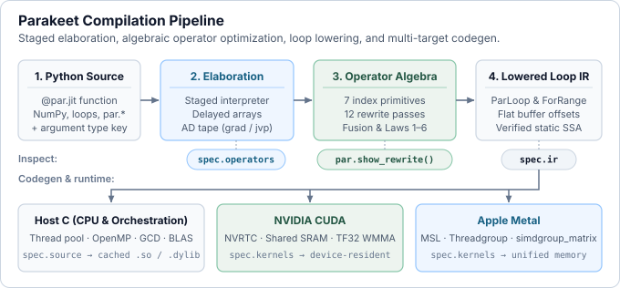

Compiler architecture¶
Parakeet compiles a decorated Python function through four clean stages: elaboration, algebraic optimization, loop lowering, and multi-target codegen.

1. Specialization¶
Calling a @par.jit function classifies its arguments—array dtype, rank,
contiguity/layout, scalar types, container structure, and callable identity—into
a type key. Each distinct key compiles to one cached native specialization.
Globals and closed-over variables are classified the same way on every call and
passed as hidden arguments so compiled code never reads stale values.
When a tiled or GPU kernel queries shape divisibility or bucket bounds (for
example, aligned 16-byte vector loads or tile multiples), Parakeet guards only
those queried dimensions via a finite power-of-2 lattice (DimInfo(lo, hi, align)),
so aligned sizes like 128, 256, 512, 1024, 4096 share one fast-path binary.
2. Elaboration¶
The frontend (parakeet/frontend/) is a staged interpreter that walks the
Python AST with compile-time values and emits IR only for runtime work:
- Scalars become typed SSA expressions.
- Compile-time structures (tuples,
NamedTuples, fixed-key dicts,@dataclasses, slices, functions, dtypes) dissolve completely—helper calls inline with zero Python frame or object overhead. - Arrays are either concrete (buffer pointer, offset, shape, strides—so views are pure integer arithmetic) or delayed (an index-to-value function that fuses into its consumer before any middle-end pass runs).
Three events trigger an automatic elaboration restart with refined information:
- Loop type promotion: a loop-carried variable widens (
x = 0thenx += 0.5restarts withx: float64). - Eager materialization: an expensive delayed array is read more than once, read inside a loop, or invalidated by an aliasing store.
- Value specialization: a compile-time parameter (
axis=,keepdims=, tuple length, or size-1 broadcast axis) is needed from a function argument.
Automatic differentiation (autodiff.py, jvp.py, algebraic_vjp.py)
runs during elaboration: forward mode propagates symbolic tangents alongside
primals, while reverse mode records operators on an algebraic tape, applies
Law 2 rematerialization,
and emits adjoint operators back into the same pipeline.
3. Middle-end passes¶
parakeet/transforms/pipeline.py runs 12 passes over the operator IR in
order (parakeet.transforms.pipeline.names()). When config.verify is enabled,
parakeet.verify checks types, scoping, and buffer ownership after every pass;
individual passes can be disabled via config.skip_transforms.
| # | Pass | Module | Responsibility |
|---|---|---|---|
| 1 | dead code |
simplify.py |
Drop pure unused operators and allocations to a fixed point |
| 2 | normalize |
normalize.py |
Squeeze unit keepdims map axes and hoist row-invariant inner reductions |
| 3 | vertical fusion |
fusion.py |
Fuse Map→Map (incl. affine views/epilogues), Scan→Map, Map→Reduce/Filter/Scatter, and flatten nested maps |
| 4 | filter fusion |
fusion.py |
Merge adjacent IndexFilters and fold Filter→Reduce into zero-alloc guarded IndexReduce |
| 5 | sibling fusion |
fusion.py |
Merge sibling reductions, maps (plus CUDA disjoint-union batching), same-key scatters, and online logsumexp |
| 6 | contraction reassociation |
reassociate.py |
Reorder chained bilinear contractions by FLOP cost (incl. MLA absorption) |
| 7 | monoidal tiling |
monoid_tile.py |
Tile rescaled semiring reductions (attention, Split-K, CCE, RBF) with Law 5 tile-interval mask pruning |
| 8 | row pipeline fusion |
fusion.py |
Collapse multi-stage per-row reduction + normalization chains (LayerNorm / RMSNorm) into single-pass GPU warp pipelines |
| 9 | chunkwise scan |
tile_scan.py |
Rewrite affine and bilinear matrix-state for loops into parallel chunkwise scans |
| 10 | pairwise fold tiling |
pairwise_fold.py |
Fuse pairwise score producers into ordered CPU/GPU tile-summary folds (e.g. 1-NN) |
| 11 | reduction interchange |
tiling.py |
Hoist strided associative inner reductions outside L1 strips on CPU (PermuteReductions) |
| 12 | tiling |
tiling.py |
Emit cache/register tiles on CPU, shared-memory / matrix-unit tiles on CUDA & Metal, and single-pass CUDA atomic reductions |
After these 12 passes, lowering (lowering.py) turns all operator
statements into scalar ForRange loops and the single parallel loop construct,
ParLoop.
4. Lowered IR (spec.operators and spec.ir)¶
Underneath the algebraic passes lies a typed, explicit-offset SSA IR with scoped static memory management (buffers free on scope exit; refcounting is used only when a buffer escapes).
Inspect both the pre-pass operator IR and post-lowering loop IR on any
@par.jit function:
import numpy as np
import parakeet as par
@par.jit
def rms(x):
return np.sqrt(np.mean(x * x))
spec = rms.specialize(np.ones(1024, dtype=np.float64))
print(spec.operators) # operator IR before the 12 middle-end passes
print(spec.ir) # lowered loop IR after all passes + lowering
Example lowered IR for rms(x):
def rms(x_1: array[float64, 1d]):
nchunks_9: int64? = @num_chunks(x_n0_3, True)
partials_10 = alloc(float64, nchunks_9)
parallel[reduce] for chunk_11, (start_12, stop_13) in chunks(x_n0_3, n=nchunks_9):
x_15: float64 = (x_1[(x_off_2 + start_12)] * x_1[(x_off_2 + start_12)])
acc_14: float64 = x_15
for i_16 in range((start_12 + 1), stop_13, 1): # simd
x_17: float64 = (x_1[(x_off_2 + i_16)] * x_1[(x_off_2 + i_16)])
acc_14: float64 = (acc_14 + x_17)
partials_10[chunk_11] = acc_14
acc_8: float64 = 0.0
for i_18 in range(0, nchunks_9, 1):
acc_8: float64 = (acc_8 + partials_10[i_18])
res_20: float64 = sqrt((acc_8 / float64(x_n0_3)))
return res_20
To trace every pass that modifies a function, pass a callback to trace_passes:
from parakeet.syntax import ir
prev = None
def on_pass(stage, fn):
global prev
text = ir.fmt_function(fn)
if text != prev:
print(f"=== {stage} ===\n{text}")
prev = text
rms.trace_passes(np.ones(1024), _trace=on_pass)
5. Backends and calling convention¶
All targets share one C-family scalar emitter (backends/cfamily.py) and one
set of scalar math helpers (NumPy floor division/modulo, NaN-propagating
min/max, RNG) so CPU, Metal, and CUDA agree bit-for-bit on integer results.
- Host C (
backends/c.py): outlines eachParLoopinto a function taking a context struct (alpha-identical bodies deduplicate) and dispatches through a runtime function pointer (thread pool, OpenMP, GCD, or sequential), so one compiled library serves every CPU backend. - GPU kernels (
backends/metal.py,cuda.py,tiled_gpu.py,monoidal_gpu.py): eligibleParLoops and tiled plans emit MSL or CUDA kernels. On CUDA, alpha-canonical kernel deduplication collapses structurally identical kernels across repeated layers (such as transformer blocks) into one NVRTC compile. Arrays remain device-resident across consecutive GPU kernels and across calls viapar.to_device. - Calling convention: entry points receive flat 64-bit slots (scalars, plus pointer, offset, shape, and strides per array). Newly allocated outputs wrap into NumPy arrays without copying using a finalizer that releases the native buffer; returned input views alias caller memory directly.
Next: Design, boundaries, and history summarizes the core design principles, current compiler limits, and Parakeet's academic lineage.